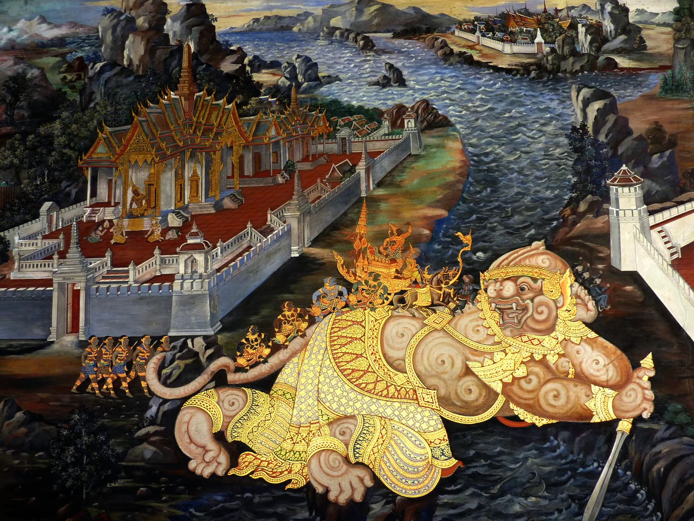
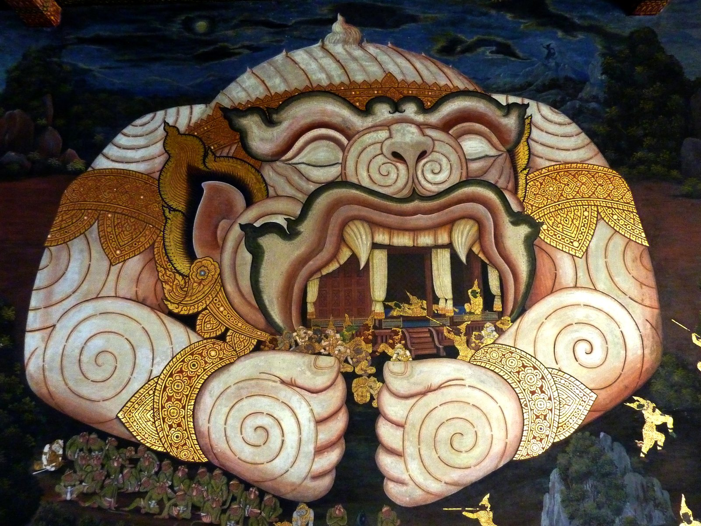

Other languages: Français
Hanuman and Harlequin: one and the same function of the messenger
By Anibal Edelberto Amiot — Published August 31, 2026 · translated from the French
The Western tradition of the motley costume finds its best-known embodiment in the figure of Harlequin. According to a notable textual precedent — Thelma Niklaus, in Harlequin Phoenix (1956) — Harlequin wears “Mercury's own livery”, and he holds a staff as Mercury held the caduceus. A scholarly reading of the character, Françoise Dininman's study of Apollinaire's poem “Crépuscule”, explicitly identifies him with Hermes and calls him an axis mundi — a link between earth and heaven. The same Harlequin costume, read as a magic square turned through 45°, is taken up in an article on the vertical axis that runs through this project (in French).
Thousands of kilometres away, in a theatrical tradition that never crossed paths with the commedia dell'arte, another figure holds a strangely similar function.

A messenger, in both cases
The character of Hanuman, central to Thai Khon theatre and to its privileged bond with King Rama, shows several striking points of convergence with the Western figure of the motley Fool:
The function of messenger. Hanuman is the devoted go-between of two worlds — the human order of Rama and the order in which Sita is held captive — exactly as Harlequin-Hermes, in Dininman's reading, links heaven and earth.
The attribute of the staff. Hanuman is frequently shown carrying a rod or a staff, as the traditional iconography of the character attests — a direct echo of Harlequin's staff and of Mercury's caduceus.
A taste for acrobatics. Hanuman is a mischievous and acrobatic character par excellence, in the Ramayana as in the Khon — a kinship of temperament with Harlequin's comic, leaping role in the commedia dell'arte.
The patterned costume. The traditional iconography of Khon theatre dresses the characters of this register — warriors, Hanuman himself — in costumes richly decorated with multicoloured lozenge and chequer patterns. A direct visual kinship with the Western motley costume, beyond the functional analogy alone.
The most striking point: growing

Apollinaire's poem “Crépuscule” ends on this line: « le nain regarde d'un air triste / grandir l'arlequin trismégiste » (“the dwarf watches sadly / the thrice-great harlequin grow”). In Dininman's reading, the word “grow” is one of the “schemes of elevation” that structure the whole poem around a zenith–nadir axis.
Hanuman, for his part, is known in the Ramayana for his ability to change size — growing immensely to cross the ocean to Lanka, or shrinking to slip in unnoticed. This is no secondary detail of the character: it is one of his most canonical traits.
In both traditions, the literal change of size along a vertical axis thus becomes the visible sign of a nature that goes beyond the human condition alone.
What this comparison is not
The nature of this reading must be clear: it is a structural analogy, not an established historical fact. No documented contact exists between the Khon theatre tradition and the European commedia dell'arte. This text does not claim that one influenced the other, nor that some hidden knowledge links the two figures.
What it suggests, more modestly, is that the Kingdom of Thailand holds, in its own living heritage, a figure directly comparable to the one that structures the Western tradition of the meaningful costume explored in La Livrée d'Hermès — a local cultural anchor for this approach, rather than a foreign import.
Sources mentioned: T. Niklaus, Harlequin Phoenix, or the Rise and Fall of a Bergamask Rogue (Bodley Head, 1956); F. Dininman, “Naissance de "Crépuscule" ou les tours de Mercure”, Que Vlo-Ve, issues 6–7.
For the notions used here — livery, verticality — see the project lexicon. This article was first published in French: Hanuman et Arlequin, deux messagers.